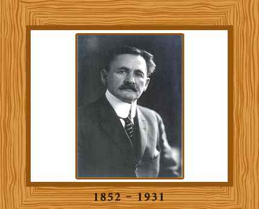

 During his four years at the Naval Academy, Michelson did extremely well in optics, heat and climatology as well as drawing. He graduated in 1873. Two years later, he was appointed an instructor in physics and chemistry. After resigning from the post in 1880, he spent two years studying in Universities of Berlin and Heidelberg, and the Collège de France and École Polytechnique in Paris. He developed a great interest in science and the problem of measuring the speed of light in particular.
He was then employed as a professor of physics at the Case School of Applied Science at Cleveland, Ohio. Later in 1889 he moved to Clark University as professor of physics, and after three years he was invited to head the department of physics at the new University of Chicago, a position which he held until 1931.
In 1899, he married Edna Stanton and they had one son and three daughters.
During his stay at Annapolis, he carried out his first experiments on the speed of light. With his simple device, made up essentially of two plane mirrors, one fixed and one revolving at the rate of about 130 turns per second from which light was to be reflected, Michelson was successful in obtaining a measure closer than any that had been obtained to the presently accepted figure — 186,508 miles per second.
Michelson executed his most successful experiment at Cleveland in cooperation with the chemist Edward W. Morley. Light waves were considered as ripples of the aether which occupied all space. If a light source were moving through the aether, the pace of the light would be different for each direction in which it was discharged. In the Michelson-Morley experiment two beams of light, passed out and reflected back at right angles to each other, took equal amount of time. Thus the concept of stationary ether had to be discarded.
Michelson is also known for the measurement of the diameter of super-giant star, Betelgeuse, using astronomical interferometer with his colleague Francis G. Pease.
In 1907, Michelson was awarded a Nobel Prize in Physics “for his optical precision instruments and the spectroscopic and metrological investigations carried out with their aid”. During the same year he also won the Copley Medal, the Henry Draper Medal in 1916, and the Gold Medal of the Royal Astronomical Society in 1923. Moreover, a crater on the Moon is also named after him.
Michelson died on May 9, 1931, while he was working on a more refined measurement of the velocity of light in Pasadena, California.
Go to top